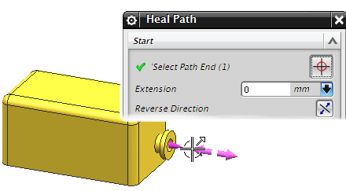
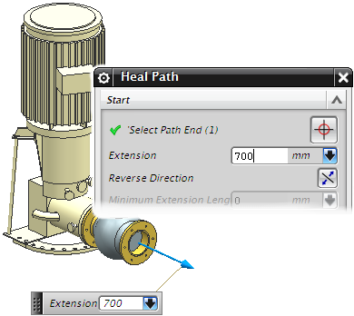

延伸
当您选择对象作为修复路径的起点或终点时，将从起始对象和终止对象向外延伸一条线段，延伸值定义了起点或终点处的线段长度。

如果您选择端口作为起始或终止对象，则在对话框中指派给该端口的延伸值将作为默认的起始或终止延伸长度。
编辑延伸段长度

要查看端口的延伸长度值，选择信息→管线布置→管线布置对象，然后选择端口。
要编辑起始或终止延伸长度，可以拖动它的延伸手柄。您也可以在延伸输入框或者屏显输入框中键入所需值来加长延伸段。
要反转延伸方向，可以双击延伸箭头，或者右击它并选择反转方向，您还可以点击对话框中的反转方向
 。
。